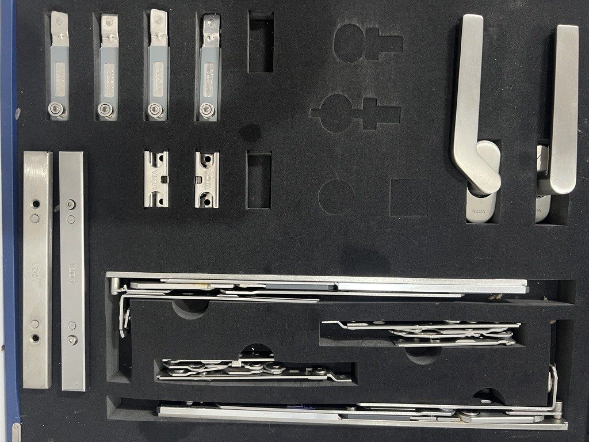

Real hardware samples photographed during a Taotao business visit. The image illustrates product context, not a corrosion test, approved finish or verified order.
Hypothetical buyer situation: Two suppliers offer window hardware with similar dimensions. One quote highlights more salt-spray hours and calls the finish suitable for years outdoors. Before accepting the price premium, the importer needs to know what was tested and what the result actually supports.
Why the decision matters
ASTM B117-26 describes a controlled salt-fog exposure practice. Its public scope does not set the specimen, exposure period or product-specific interpretation. ASTM also cautions that standalone results are not a reliable basis for predicting natural-environment performance.
For procurement, “more hours” is therefore an incomplete comparison. The useful decision is whether each report covers the offered part and the same agreed acceptance rule. This is Taotao's document-review approach, not a service-life calculation.
Evidence the buyer should request
Put both offers into this working comparison before choosing a finish. Leave missing entries as unconfirmed rather than assuming they match.
| Field | Evidence to request | Decision it supports |
|---|---|---|
| Part identity | Part number, drawing revision and photographs identifying the tested specimen | Was this the offered hardware or a separate test panel? |
| Finish configuration | Substrate and coating specification linked to the quotation | Will production use the same finish configuration? |
| Test and assessment | Method/version, exposure duration, observed condition and the acceptance criterion agreed for this application | Are both reports answering the same question? |
| Production connection | Finish supplier/process reference, change-notification agreement and incoming or lot inspection plan | How will an accepted sample be connected to delivered parts? |
How to verify it
First compare the report's specimen identification with the drawing and finish code on the quote. Ask the laboratory or report owner to resolve ambiguous descriptions. Then compare the actual observations and agreed acceptance criteria; a bare “pass” without a defined requirement does not tell the buyer what was accepted.
Finally, keep the commercial promise separate. If a seller offers an outdoor warranty, request its written coverage, exclusions and remedy. Ask a suitable corrosion specialist whether the evidence fits the intended environment. Do not convert chamber hours into years using a convenient multiplier.
Red flags and limitations
Pause if a report belongs to another finish, shows only a cropped result page, or cannot be linked to the quoted part. A longer exposure on a different specimen is not automatically a stronger offer. This review does not establish mechanical performance, installation suitability or a complete product compliance assessment.
Continue / Pause / Escalate
- Continue: part and finish identity align, the acceptance rule is explicit, and the production follow-up is agreed.
- Pause: missing specimen details or incompatible report conditions prevent a fair comparison.
- Escalate: a service-life claim or demanding exposure environment needs specialist evidence beyond this report.
Related product context: door and window hardware. Next step: send Taotao Trading a redacted finish specification and test summary for a document-gap review. Remove prices, personal contacts and customer identifiers.